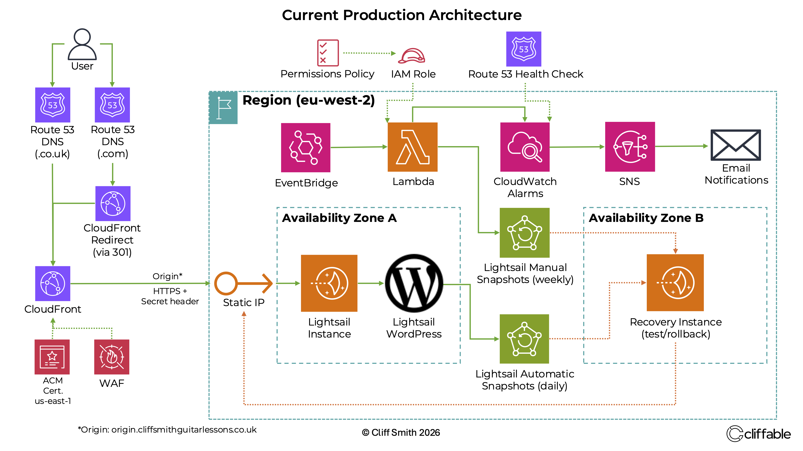
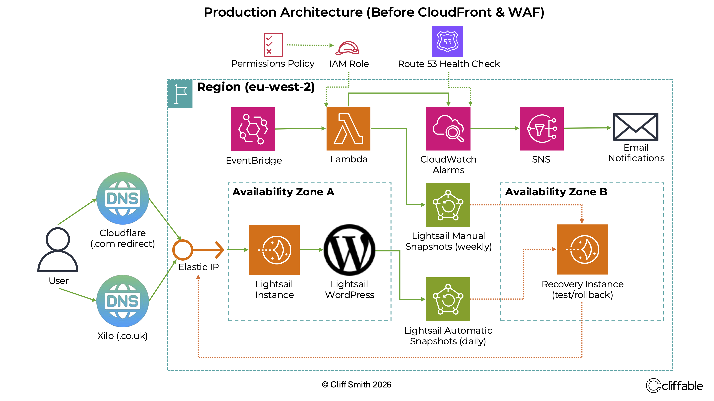

Published 4 September 2026
Migrating a Production WordPress Site to CloudFront and AWS WAF
Consolidating domain and DNS management in AWS, removing Cloudflare and Xilo, and placing a live Lightsail WordPress site behind CloudFront and AWS WAF without disrupting the website or business email.
{kind=link}

Current CSGL production architecture after migrating public traffic through Route 53, CloudFront and AWS WAF.
Why change a working production architecture?
Cliff Smith Guitar Lessons is a live WordPress business website running on AWS Lightsail in eu-west-2. The architecture already included monitoring, alerting, automated snapshots and a tested recovery process.
The security work was prompted by a period of production instability and sustained hostile traffic. WordPress was recording continual automated login attempts while the server experienced outages that required repeated investigation and manual intervention.
The Lightsail instance was eventually increased from 1 GB to 2 GB to provide additional operating headroom. The 1 GB instance had previously handled the normal workload without difficulty, so simply increasing capacity did not address the unwanted traffic reaching WordPress.
Limit Login Attempts Reloaded had recorded 5,487 login lockouts, with repeated attempts from distributed IP addresses using commonly guessed and generated usernames. While this did not prove that every outage was caused by brute-force traffic, it demonstrated the level of automated activity reaching the application.
Rather than continuing to scale the origin to absorb unwanted traffic, the goal became to filter more of it at the edge before it reached WordPress.
At the same time, domain registration and DNS were fragmented across Xilo, Cloudflare and AWS, and the Lightsail server remained directly reachable from the internet. The migration therefore combined infrastructure consolidation with a stronger security layer in front of the existing application.
{kind=link}

Production architecture before the migration. Public traffic reached the Lightsail origin directly, while domain and DNS responsibilities were split across Xilo, Cloudflare and AWS.
Consolidating the domains and DNS
Both cliffsmithguitarlessons.co.uk and cliffsmithguitarlessons.com were transferred from Xilo to Amazon Route 53 Domains. The .co.uk transfer required the UK-specific IPS tag process and was ultimately completed through Nominet self-service after delays with the previous registrar.
Route 53 became authoritative for DNS and the remaining Cloudflare zone was removed, eliminating both Xilo and Cloudflare from the production domain architecture.
Preserving business email during the DNS migration
Moving DNS for a production website is not only about the website. The hosted zone also contained records required by other business services.
These included:
- Google Workspace MX records
- SPF
- Google DKIM
- Mailchimp DKIM
- DMARC
- Google verification records
- ACM validation records
Preserving these records was an important part of the migration. A DNS change could leave the website functioning normally while silently breaking business email or domain verification.
Keeping the .com redirect separate
The secondary cliffsmithguitarlessons.com domain continues to redirect permanently to the .co.uk site.
This remains a separate CloudFront redirect path. Requests to the .com domain are resolved through Route 53 and returned as a 301 redirect to the primary .co.uk domain.
Keeping this separate from the WordPress CloudFront distribution avoids mixing two different functions: serving the production application and redirecting the secondary domain.
Putting CloudFront in front of WordPress
A new CloudFront distribution was created for the production WordPress site. Route 53 now sends traffic for cliffsmithguitarlessons.co.uk and www.cliffsmithguitarlessons.co.uk to CloudFront rather than directly to the Lightsail static IP.
An ACM certificate in us-east-1 provides viewer-side HTTPS.
Visitor → Route 53 → CloudFront + AWS WAF → Lightsail WordPress
Creating a dedicated origin hostname
CloudFront connects to the server through a dedicated Route 53 hostname:
origin.cliffsmithguitarlessons.co.uk
The hostname resolves to the Lightsail static IP, separating the public website address from the hostname CloudFront uses to reach the origin.
Troubleshooting the CloudFront 502
Initial CloudFront tests returned a 502 Bad Gateway. The viewer-side CloudFront certificate was valid, so the problem was traced to the HTTPS connection between CloudFront and Lightsail.
The existing Let's Encrypt certificate covered the apex and www hostnames but not the new origin.cliffsmithguitarlessons.co.uk hostname. Certbot was used to add the origin hostname, and Apache was updated accordingly:
ServerName cliffsmithguitarlessons.co.uk
ServerAlias www.cliffsmithguitarlessons.co.uk
ServerAlias origin.cliffsmithguitarlessons.co.uk
After sudo apache2ctl configtest returned Syntax OK,
Apache was reloaded and CloudFront successfully connected to the origin.
The incident highlighted an important distinction: Browser ↔ CloudFront and CloudFront ↔ Lightsail are separate TLS connections. A valid CloudFront certificate does not guarantee that origin-side HTTPS is configured correctly.
Preventing direct origin bypass
CloudFront and WAF would provide limited protection if requests could simply bypass them and reach the Lightsail origin directly.
CloudFront was therefore configured to send a secret custom HTTP header with origin requests, while Apache rejects requests to the origin hostname when the expected header is absent.
- Direct origin request → 403 Forbidden
- Request through CloudFront → WordPress loads normally
The secret header value is deliberately not documented publicly.
Cutting production traffic over to CloudFront
Once CloudFront-to-origin communication was working correctly, the Route 53 record for cliffsmithguitarlessons.co.uk was changed from a direct address pointing at the Lightsail static IP to an Alias A record pointing at the CloudFront distribution.
The www hostname was also routed through CloudFront.
After the cutover I tested the production application rather than assuming that a working homepage meant the migration was complete.
- Homepage
- HTTPS
- www hostname
- Normal WordPress pages
- WordPress admin and login
- Contact form
Initial testing succeeded, but a subsequent redirect loop exposed an incorrect CloudFront origin request policy. WordPress was redirecting the public hostname back to itself because the expected viewer request data was not reaching the origin.
Forwarding only the Host header fixed the redirect loop but broke WordPress
authentication, including OTP login. The final configuration therefore uses the
managed AllViewer origin request policy with
CachingDisabled, allowing the dynamic WordPress application to receive
the viewer request data it requires without introducing edge caching.
The incident also exposed a weakness in my original validation process. During the migration, seeing the website load successfully was not sufficient evidence that the request had actually followed the intended CloudFront path. Browser and DNS caching can obscure a recent DNS change, while a redirect can move a test request onto a different path entirely.
I therefore repeated the validation with curl -I, checking both the
HTTP status and the response headers. A 200 response together with the
CloudFront Via header confirmed that the production hostname was
successfully being served through CloudFront rather than reaching Lightsail directly.
Why caching was disabled initially
CloudFront was introduced primarily as an edge and security layer rather than for caching. CSGL is a dynamic WordPress application with login, admin and form functionality, so introducing caching rules during the same production change would have added unnecessary risk.
The initial distribution therefore uses CachingDisabled. Selective caching can be introduced later if there is a genuine performance requirement.
Adding AWS WAF
AWS WAF was associated with the CloudFront distribution so matching malicious requests can be blocked before they reach WordPress, Apache or PHP.
WAF was initially deployed in monitor mode. After production functionality was tested, monitor mode was disabled and blocking became active.
If monitoring shows that origin load returns to its previous normal level, I can evaluate whether the Lightsail instance can be reduced from 2 GB back to 1 GB. The aim is to size the server for legitimate traffic rather than increase capacity indefinitely to absorb unwanted requests.
The resulting architecture
The migration changed the public edge of the architecture without replacing the existing Lightsail workload, monitoring, alerting or backup systems.
- Domains and authoritative DNS consolidated in Route 53
- Cloudflare and Xilo removed from the production architecture
- Public .co.uk traffic routed through CloudFront and AWS WAF
- ACM used for viewer-side HTTPS
- Dedicated HTTPS origin hostname protected by a secret CloudFront header
- Existing .com 301 redirect retained on its separate CloudFront distribution
Conclusion
This work extended an existing production architecture rather than rebuilding it from scratch. The existing WordPress, monitoring and recovery architecture remained in place while DNS management, edge security and origin protection were strengthened around it.
The main technical lessons were the importance of treating viewer and origin TLS separately, preventing direct origin bypass, and correctly forwarding viewer requests when placing a dynamic WordPress application behind CloudFront. Just as importantly, the migration was staged and tested while the website remained a live business service.
Related project
This work extends the production architecture originally implemented in the Designing a Recoverable WordPress Architecture on Amazon Lightsail project.